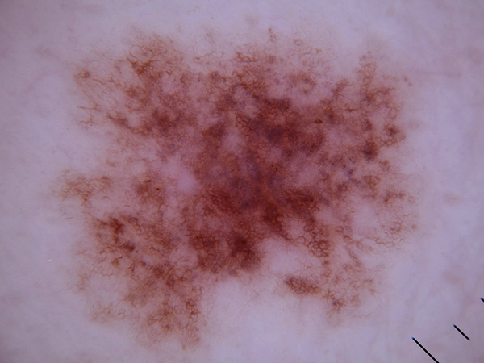
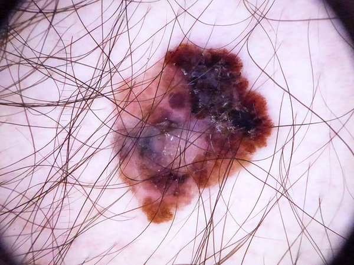
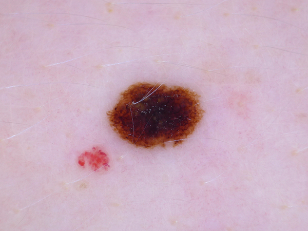
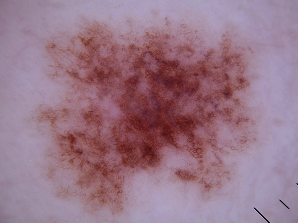
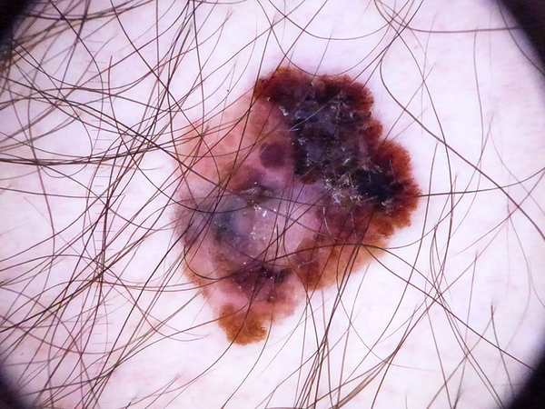
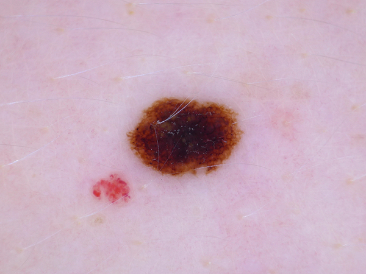

-
What is this lesion?
Melanoma is a malignant neoplasm derived from melanocytes that may appear in different variants. They can be invasive or noninvasive (in situ).
-
What does it look like?
Superficial spreading melanomas commonly arise from atypical nevus. They are asymmetric and have considerable variation in edge and colour.
Nodular melanoma arise without an obvious precursor lesion. They are dark brown to black nodules that typically doesn’t have edge or color variation.
Lentigo maligna melanoma present as a nodule in an expanding irregular large brown patch. They are most commonly found on areas of maximal sun exposure such as the face.
Acral melanoma are asymmetric brown to black lesion on the hands or feet.
Subungual melanoma is a red-purple to black nodule that occur under the nail plate.
Mucosal melanoma occurs on mucosal sites, especially ocular or oral mucosal sites.
-
Known risk factors
Risk factors for skin cancers include:
- excessive prior sun exposure
- presence of multiple skin moles
- presence of abnormal-looking moles
- family history of skin cancer
- chronic systemic immunosuppression
Ultraviolet induced types of melanoma include superficial spreading melanoma, nodular melanoma and lentigo maligna melanoma.
-
Should I see a doctor?
YES. You should make an appointment with your doctor if you notice any unusual skin changes that suggests melanoma. If recognized and excised in an early stage melanoma can be cured by simple surgical excision. The earlier melanoma is diagnosed, the better the patient’s chance of survival.
-
What the doctor would do about it?
To determine whether a lesion is melanoma, your doctor may remove a sample of the lesion for testing (biopsy). The treatment of malignant melanoma is surgical. If excised in an early stage melanoma can be cured by simple surgical excision. For metastatic melanoma lesions, treatment options include immunotherapy and immune checkpoint inhibitors.
 




